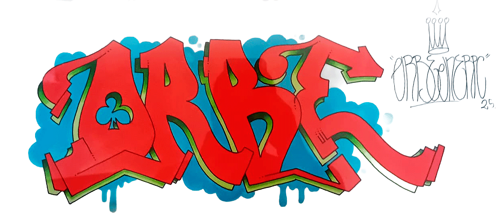
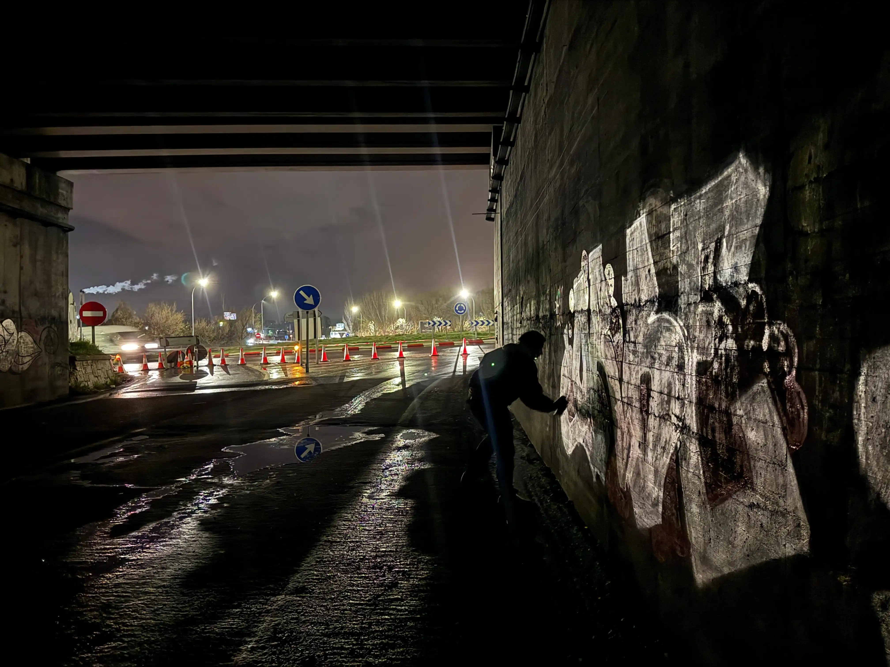
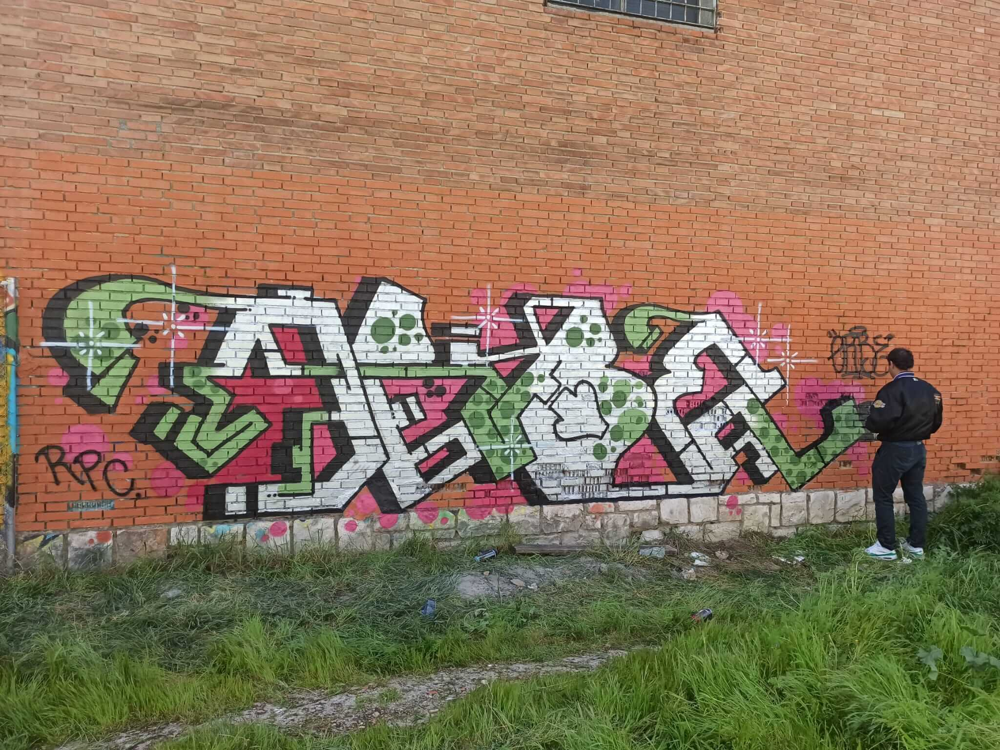

IVAN ARMALASER
“El grafiti es reivindicación.
De que estoy aquí, de que
existo”
POR Melanie German - MAYO 16 2026

Repetimos tantas acciones una y otra vez que, a veces, no somos
conscientes de ellas.El contexto actual nos hace ir en
automático. No hay tiempo para frenar y pensar “¿por qué estoy
haciendo esto?” o, ¿desde cuándo estoy haciendo esto?
Pero, ¿qué pasa cuando dejamos de hacer lo que ya
tenemos incorporado en nuestra cotidianidad? ¿Lo que nos da
vida, lo que nos hace ser felices?
Alucinado por el mundo del Hip-Hop, Iván descubrió
dos vertientes artísticas que marcarían su vida: Los vinilos y
el grafiti. Y, aunque intentó dejarlo, actualmente, con 48 años,
el adolescente entre el Hip-Hop y el Rap, sigue manteniendo
intacta su pasión.

¿Siendo una época tan digital, qué es lo que te atrae de mezclar con vinilos?
Bueno, cuando yo empecé de digital no había nada. A esto lo descubrí a principio de los años 90’s, pero ya me llamaba la atención desde hace bastante tiempo.
¿En qué momento te llamó la atención? ¿Cómo fue ese primer encuentro?
Un día un amigo se llevó los giradiscos que tenían sus padres a su habitación, los modificó un poco para poder pinchar con ellos, hacer scratch (manipular los vinilos) sin que saltara la aguja y de ir algunas tardes a su casa, pues yo descubrí que era eso lo que quería.
¿Crees que hay algo militante de seguir pinchando de esa manera, de querer mantenerlo?
Considero que no hay nada militante en seguir pinchando en vinilo porque es como lo conocí, pero sí puede ser algo militante no haber querido adquirir un sistema digital. No aprender de ello o compatibilizarlo.
Me interesa que nos comentes tu opinión sobre lo digital ¿Por qué no tienes intención de mezclar los vinilos con este mundo?
Creo que ambos mundos son muy respetables, pero diferentes. Cada uno aporta un sonido distinto, tienen muchos puntos en común porque puedes pinchar el mismo tipo de música, pero hacerlo en vinilo aporta otra serie de cosas.
¿Podrías darme un ejemplo?
Pues, quien pincha en vinilo necesita cierto conocimiento que no tiene por qué tener quien está en el mundo digital. El conocimiento de discográficas sobre todo, porque si se pincha música de 40 años para atrás, se necesita un conocimiento sobre los discos, sobre quién los vende, redes de compraventa de vinilos y otras cosas.

Además de pinchar, eres escritor de graffiti. ¿Cómo comenzaste con cada disciplina?
Todo comenzó porque empecé a escuchar Hip-Hop cuando se puso de moda en España. Sería en el año 1988 o 1989, cuando se editan Madrid Hip-Hop y un recopilatorio de Barcelona, que es cuando se difunde ampliamente en la sociedad española el mundo del Hip-Hop y del grafiti. En esa época eso era todo muy militante, la gente no se limitaba a escuchar música, querían hacer un poco todo. Bailar breakdance, hacer grafitis, tener unos platos, escribir unas rimas, llevar la estética. Entonces, como adolescente, alucinado por la música negra y sabiendo más o menos dibujar, me fui hacia esas dos vertientes.
¿Para tí es fundamental saber dibujar para hacer grafitis o pasa por otro lado?
Hay que saber dibujar, pero saber dibujar letras. Porque se compite en cantidad y calidad en cuanto a las letras. Es decir, hay gente que quiere tener su firma por toda la ciudad, pero está todo colapsado de firmas de otras personas, entonces lo que realmente quieres es tener un estilo propio que puedo diferenciarte de otros escritores.
El mundo del grafiti pasa un poco por el anonimato, ¿cómo ves el ponerle voz a tu arte en esta entrevista?
A mí me encanta hablar de esto y me encanta la historia en torno al grafiti. Es raro, porque mucha gente que pinta desde hace años no es capaz de explicar el por qué lo hace o los mecanismos mentales que se activan al hacerlo. Simplemente lo hacen por una necesidad que viene de hace tiempo y que necesitan seguir haciendo, porque no lo pueden dejar.
Dices que algo se activa cuando se grafitea. ¿Qué es lo que se activa en ti?
Uf, no sé. Diría que son de los momentos más libres, más felices y más honestos de toda mi vida. Es hacer algo ilegal en donde eres tú contra la ciudad, tú contra el capital, contra el Estado, contra otros escritores. El poder entrar sin que te descubran, el poder hacerlo, que a la mañana siguiente la gente lo vea y les sorprenda. Te podría hablar de un millón de cosas respecto a esto.
Cuéntanos más que nos interesa
Usas el nombre que tú has escogido, no el que te pusieron tus padres. Entonces es cuando eres realmente tú de alguna manera, no es la máscara que tienes que tener en el trabajo o en tus relaciones sociales. Es la personalidad que tú has escogido y cómo lo quieres hacer y en dónde lo quieres hacer.
¿Podemos saber bajo qué nombre firmás?
Orbe
¿Tiene algún significado especial?
Sí. Realmente tiene un significado. Creo que ‘orbe’ significa la totalidad del universo o algo de eso, la verdad es que no lo escogí por ello. Yo firmaba con otra cosa, lo que pasa es que había una persona en la punta de la ciudad donde vivo que pintaba algo parecido. Entonces, modificando las letras, me salió Orbe. Recuerdo que un día mi madre me vio dibujar y me dijo: “Esto es lo que dice el Papa, urbi et orbi”.
Al final terminaste creando un nombre religioso y todo ¿Recuerdas la primera vez que saliste a pintar?
La primera vez no porque no fue nada especial. Diría que en el año 90 o 91 empezaría a hacer mis primeras cosas. Era algo que yo observaba de gente más mayor. Recuerdo que iba sobre 5.º de EGB y había gente más experimentada de 8.º, entonces veía y primero copiaba en cuadernos, en cómics que tenía por casa. Fue muy progresivo, no podría decir que hay un punto de inflexión. Aunque en 1992 realicé mi primera masterpiece, una obra que tiene su contorno, sus tres dimensiones, algún tipo de fondo.
¿Algún tipo tuviste algún problema por pintar en la calle?
Sí. Pintar en la calle es igual a tener que asumir problemas. Problemas con la legalidad y con otros escritores. Al fin y al cabo los espacios muchas veces son finitos y tienes que pisar a otro y otro te va a pisar a ti. Eso es más que nada siendo joven, ahora mismo ese tipo de cosas no le preocupan a uno. Pero sí, pintar grafitis es igual a policías, multas, pagar y tener el desprecio de otros escritores.
¿Eso te condiciona ahora mismo para salir?
Mmm, no. Me condiciona más adaptarme al medio o cambiar algunas letras. Además, los sitios ilegales donde pinto, aunque sean ilegales, son sitios donde es difícil que me puedan pillar.
¿Cómo eliges los lugares que quieres intervenir?
Ahora mismo pintaría en sitios donde la sociedad no tiene acceso. Sitios donde solo pintaran escritores de grafitis y solo lo vean ellos, a no ser que alguien sea fan de este arte, no lo practique pero que tenga cierto gusto por verlo y se acerque a ellos. Suele ser debajo de puentes, túneles de cercanías o cosas así.
¿Cómo piensas que debe ser el grafiti?
Yo soy un poco ortodoxo. Creo que el grafiti tiene que ser basado en letras y con carácter ilegal. Que sea ilegal no significa pintar en la plaza del pueblo en cinco minutos para que lo vea todo el mundo. Ilegal significa que forma parte de tu personalidad, el no querer tener interrelación con organismos públicos, es decir, no pedir paredes, que no sepan de ti.
¿Cuál es tu estilo al grafitear?
Hay un tipo de grafiti como protesta que es de gente que pone frases reivindicativas y tal. Ese tipo de grafiti ya existía antes del grafiti del que estamos hablando nosotros, que es un grafiti neoyorkino. Ese antes se llamaba writing, que consiste en escribir un nombre y ponerlo en toda la ciudad. De hecho, un escritor dice que el término ‘grafiti’ lo impusieron los mass media. Pero este grafiti es distinto, tiene sus propias normas, sus propias reglas y se llamaba así, grafiti writer.
¿Entonces el tipo de grafiti que realizas consta en poner tu nombre?
Sí, generalmente es poner mi nombre.
¿Crees que el grafiti sigue siendo una forma de protesta o que hoy significa otra cosa?
El grafiti nunca ha sido una forma de protesta. Es decir, no hay un mensaje político, realmente el mensaje es uno mismo. Aunque, en el barrio más pobre de New York, comenzó como una forma de reivindicación de las personas.
Me interesa eso que nos cuentas
Claro. Había gente que ponía su nombre y ese nombre circulaba por toda la ciudad porque se escribía en trenes que generalmente no limpiaban. Entonces, un poco es reivindicación de que estoy aquí, que existo, que no soy un número de la seguridad social, no soy un latino pobre que va a estar enganchado al crack dentro de cinco años y ya está. Puedo ser un artista aunque no tenga nada, aunque no tenga ningún tipo de cultura, ningún tipo de formación, aunque pertenezca al estrato más bajo de la sociedad. Estoy aquí y existo.
¿Hoy qué lugar ocupa el grafiti en tu vida?
El otro día lo estaba pensado y no es algo que me fuerce a hacer, es algo natural que no puedo dejarlo. Llevo haciéndolo desde los 12, 13 años y lo he intentado dejar. En plan, una temporada que he dejado de pintar y he estado más dibujando o produciendo como DJ y pensaba, qué bien estar aquí, sin tener que pagar multas, sin tener que volver a las siete de la mañana a casa. Pero llega el momento en el que necesito escribir.
Es como si necesitaras de esa adrenalina
Sí, bueno… La adrenalina es un componente, pero no lo es todo. La adrenalina es principalmente para chavales jóvenes que empiezan y les gusta mucho pintar en sitios como en la M-30, en el metro, poder exhibir la hazaña en redes sociales o frente a sus amigos del instituto. La adrenalina sería un componente, pero no es lo más importante. La necesidad es escribir.
Que bonito, se te nota apasionado.
Para estar con 48 años con esto todavía, tienes que tener cierta pasión.